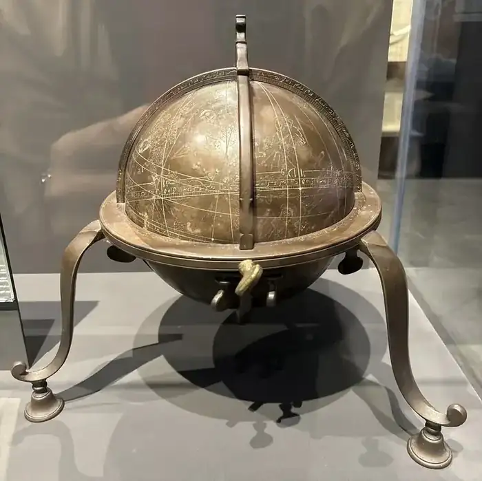
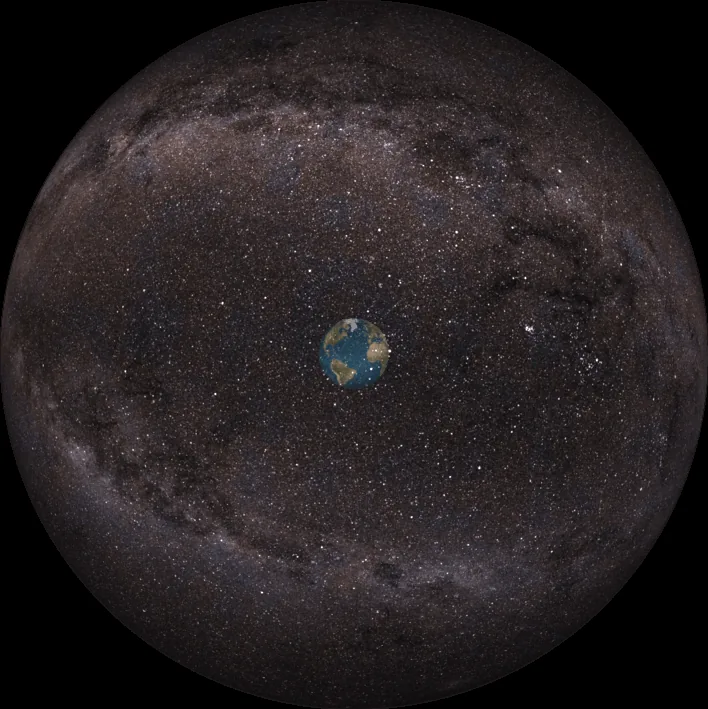
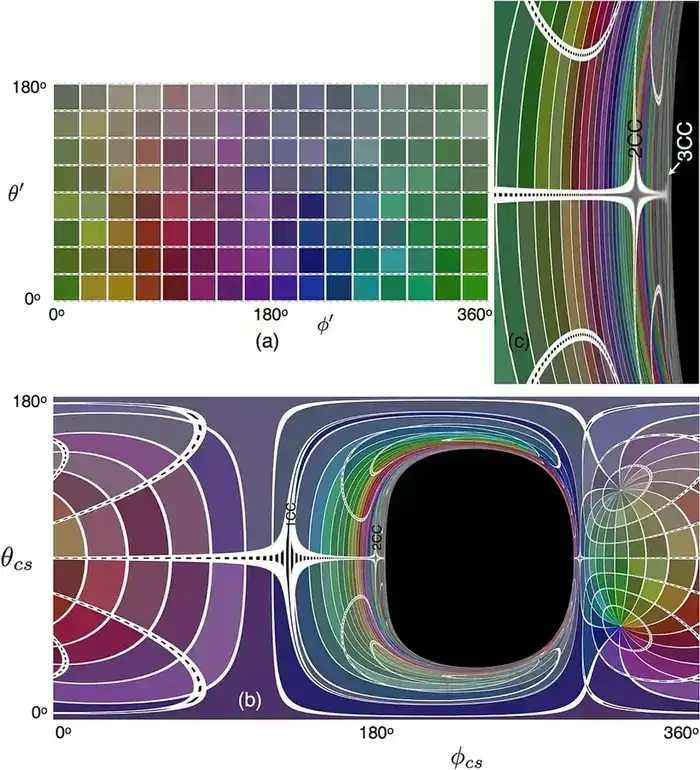

The half that is right
Most Sun-like stars are not alone. A 2021 analysis using Gaia mission data identified about 1.3 million binary pairs — 2.6 million stars — within roughly 3,200 light-years, and concluded that roughly half of all Sun-like stars are gravitationally bound to a companion. For the most massive stars, the fraction approaches 100 per cent.
Maps, diagrams and images






The nearest system, Alpha Centauri, is a triple: two Sun-like stars orbiting each other and a red dwarf, Proxima, loosely bound to both.
There is a stronger version still. A 2017 analysis of the Perseus molecular cloud by Sarah Sadavoy (Smithsonian Astrophysical Observatory) and Steven Stahler (UC Berkeley) found that the only model reproducing the observed mix of young single stars and binaries was one in which all Sun-like stars form initially as wide binaries, which then either tighten or break apart within about a million years.
On that model, our Sun very likely had a sibling — and lost it. “We are saying, yes, there probably was a Nemesis, a long time ago,” Stahler said.
The half that is wrong
The Nemesis hypothesis is a specific, testable proposal: that the Sun has a faint companion on a long, eccentric orbit which periodically perturbs the Oort Cloud, sending comets inward and producing a ~26-million-year cycle of mass extinctions. It was proposed in 1984, and it fits neatly with the popularity of “Planet X” in the same period.
Nemesis has never been found. Infrared surveys, proper-motion catalogues and wide-field imaging have repeatedly failed to detect a companion of the required mass and distance. As BBC Future summarises it, the idea has fallen out of favour since 1984 after multiple surveys and studies found nothing.
And that is the correct scientific outcome for a failed prediction: not a conspiracy, just a hypothesis that lost.
“Fortunately for us, our Sun does not have a companion today. If it did, the gravitational pull of a solar sibling could have disrupted the orbit of the Earth and the other planets.” BBC Future, “The search for the Sun’s missing twin” (2024)
“Second sun” photographs
Every few months a photo circulates showing two suns in the sky. These are almost always optical phenomena with well-understood physics, and the two main culprits are:
- Sun dogs (parhelia) — bright patches either side of the Sun, produced by sunlight refracting through hexagonal ice crystals in cirrus cloud. They sit at a fixed 22° from the Sun and are common in cold climates.
- Lens flare — internal reflections inside a camera lens, which mirror the Sun across the frame’s centre and move with the camera.
The distinguishing test is trivial: a sun dog stays put relative to the real Sun as the camera moves; a flare moves with the lens.
Two suns in myth
Dual-sun imagery is genuinely old. The Chinese myth of the ten suns — archer Hou Yi shoots nine of them down — is a classical example of a sky with too many suns, and it is a story about drought, not astronomy. Norse and Vedic material contains comparable doubling motifs. It is worth separating three claims that get merged online:
| Claim | Status |
|---|---|
| The Sun once had a binary companion | Plausible, likely — most Sun-like stars form in pairs |
| A companion star exists now and is being hidden | No evidence — would be infrared-bright and gravitationally obvious |
| Photographs show a second sun in the sky | Optics — parhelia or lens flare |
The inner-sun variant
Hollow and concave Earth models need a light source inside the planet, and this is often described as a “second sun” — a small, central luminary. It is a different claim from Nemesis and should not be conflated with it. Its problems are thermodynamic rather than astronomical: an interior light source bright enough to sustain an ecosystem for geological time has no viable power source, and its waste heat would be detectable at the surface. See Hollow Earth.
Binary stars are the norm, not the exception — that part of the fringe intuition is correct and genuinely interesting. But “most stars are binary” does not imply “our Sun has a hidden twin”. The Sun’s mass, the orbits of the planets and the infrared sky have all been measured to a precision that rules out a companion of any plausible size within light-years.
Sources for this page
- Center for Astrophysics | Harvard & Smithsonian, “New Evidence That All Stars Are Born in Pairs”cfa.harvard.edu
- Berkeley News, “New evidence that all stars are born in pairs” (Sadavoy & Stahler, 2017)news.berkeley.edu
- BBC Future, “Our Sun may once have had a twin. What happened to this stellar sibling?” (2024)bbc.com/future
- Eos / AGU, “1.3 Million Pairs of Stars Surround the Sun” — Gaia binary censuseos.org
- arXiv, “The importance of binary stars” (2024 review)arxiv.org/html/2411.18470v1
- Sun dog / parhelion — atmospheric opticsen.wikipedia.org/wiki/Sun_dog
Open resources on this topic
- PapersOpen-access articles: DOAJ · PubMed Central · Internet Archive Scholar
- BooksPublic-domain and borrowable copies: Open Library · Project Gutenberg · Google Books · Internet Archive
Cite this page
Momin, S. (2026). Dual Suns, Dual Stars. The Larger World Archive. https://drsamonline.github.io/LARGE_GLOBE/suns-stars.htmlMomin, Sohil. “Dual Suns, Dual Stars.” The Larger World Archive, 2026, https://drsamonline.github.io/LARGE_GLOBE/suns-stars.html.Momin, Sohil. “Dual Suns, Dual Stars.” The Larger World Archive, 2026. https://drsamonline.github.io/LARGE_GLOBE/suns-stars.html.@misc{dual2026suns,
author = {Momin, Sohil},
title = {Dual Suns, Dual Stars},
year = {2026},
howpublished = {The Larger World Archive},
url = {https://drsamonline.github.io/LARGE_GLOBE/suns-stars.html},
note = {Last reviewed 20 November 2026}
}Last reviewed 20 November 2026 · Corrections policy · this page is not peer reviewed